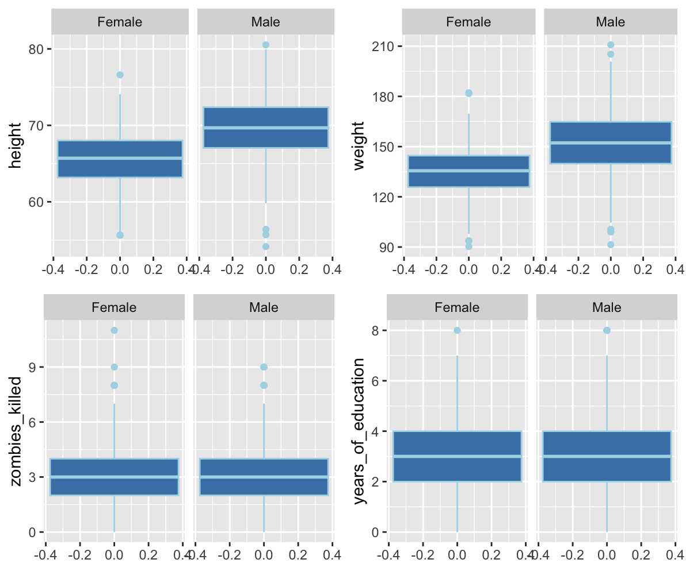
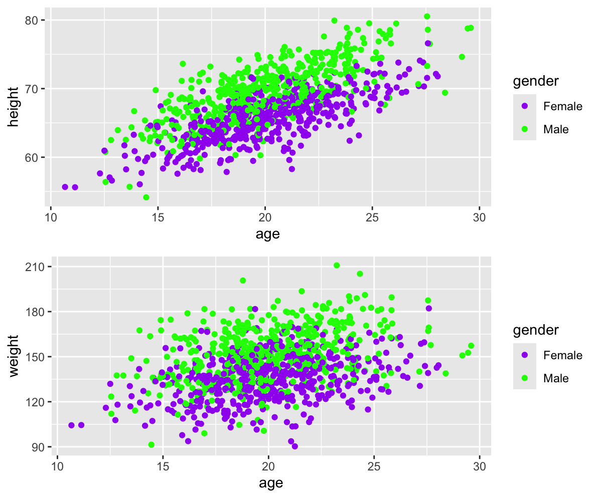
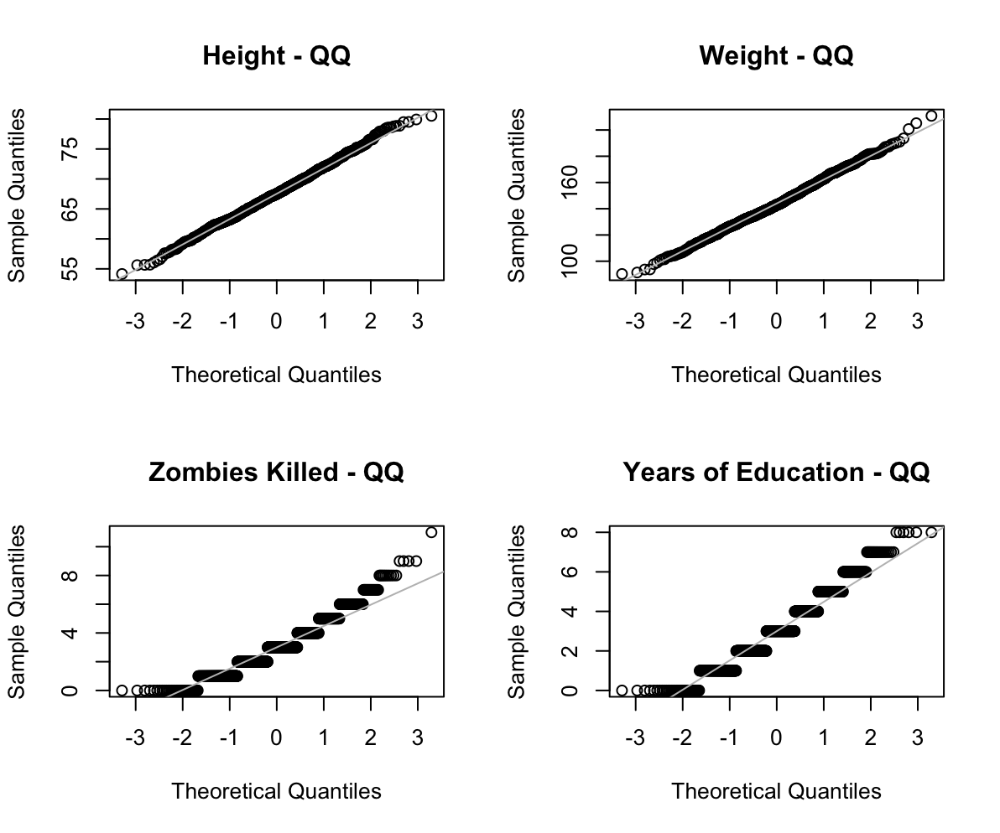
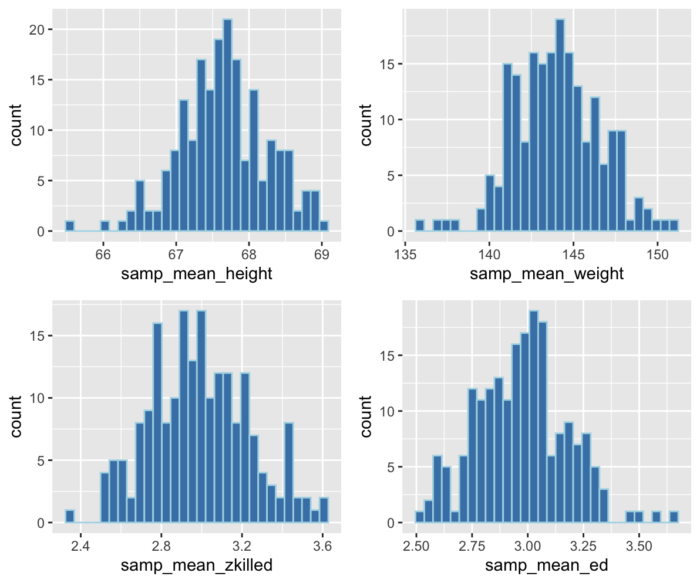

exercise 5
Challenge One
Step One
After loading the tidyverse package so I could access dplyr and other such functions. I read in IMDB-movies csv file directly from the URL provided and attached the new tibble for easier use.
library(tidyverse)
d <- read_csv("https://raw.githubusercontent.com/difiore/ada-datasets/main/IMDB-movies.csv", col_names = TRUE)
attach(d)Step Two
Using the base R piping function, I filtered the original dataset to only include movies released between 1920 and 1979 before filtering again to only include movies between 60 minutes and 180 minutes (1-3 hours). After that, I used mutate and a series of ifelse sequences to use the startYear column as a reference to create a Decade column for future reference.
d <- d |> filter(startYear >= 1920 & startYear <= 1979) |>
filter(runtimeMinutes >= 60 & runtimeMinutes <= 180) |>
mutate(Decade = ifelse(startYear >= 1920 & startYear <= 1929, "20s", ifelse(startYear >= 1930 & startYear <= 1939, "30s", ifelse(startYear >= 1940 & startYear <= 1949, "40s", ifelse(startYear >= 1950 & startYear <= 1959, "50s", ifelse(startYear >= 1960 & startYear <= 1969, "60s", ifelse(startYear >= 1970 & startYear <= 1979, "70s", NA)))))))Step Three
Using ggplot and facet_wrap, we can visualize the run times of each decade. Each decade has a slight right skew but earlier decades appear to exhibit stronger skew. The 20s seems to be less skewed than the 30s or 40s, but it’s small size suggests a right skew as well. This visual suggests that the average movie generally became slightly longer between decades.
library(ggplot2)
(p <- ggplot(d, aes(x=runtimeMinutes)) +
geom_histogram(color="lightblue", fill = "steelblue") +
facet_wrap(~ Decade))
Step Four
Using the pipe function and summarise functions from dplyr, I created the population mean and population standard deviation for movie run-time and saved them into a file called results. List is all follows:
1920s - mean: 96.25658 sd: 26.11500
1930s - mean: 90.3 sd: 17.27247
1940s - mean: 97.20332 sd: 19.11149
1950s - mean: 98.94820 sd: 19.19757
1960s - mean: 105.58586 sd: 21.22436
1970s - mean: 103.75000 sd: 17.95412
(results <- d |>
group_by(Decade) |>
summarise(mean_runtime = mean(runtimeMinutes, na.rm = TRUE),
sd_runtime = sqrt(sum((runtimeMinutes - mean(runtimeMinutes))^2)/length(runtimeMinutes))))Looking at the means and standard deviations, this backs up my early assessment of spread. In general, movie times have increased on average; with the 1920s-1930s representing a dip down into shorter movie times. However, this was paired with a wide range from the mean. The 1920s has the largest spread from it’s mean while the 1930s, with the shortest run-time, has the smallest spread. Surprisingly, while spread increased with mean run-time, for most of the decades, the second smallest standard deviation is associated with the decade with the second longest average run-time. Suggesting that during the 1930s and 1970s most movies had average run-times; while in other decades, the mean was less representative.
Step Five
Using pipe functions, grouping by decade then slice_sampling 100 random movies, I created a sample that was then able to be summarized through the summarise function. Means and standard deviations to follow;
1920s - mean: 96.51 sd: 26.06654
1930s - mean: 92.72 sd: 18.92947
1940s - mean: 98.03 sd: 19.94308
1950s - mean: 99.16 sd: 19.17106
1960s - mean: 105.57 sd: 19.22606
1970s - mean: 104.32 sd: 19.73966
(samp_results <- d|>
group_by(Decade) |>
slice_sample(n = 100) |>
select(runtimeMinutes) |>
summarise (samp_mean_runtime = mean(runtimeMinutes, na.rm = TRUE),
samp_sd_runtime = sd(runtimeMinutes, na.rm = TRUE)))Comparing the sample to population, the same trends can be noted although the numbers can stray from the population counterparts by a couple of decimals.
Step Six
I calculated the standard error by dividing the samples standard deviation by the square root of the sample size (n=100). I got the following SEs
1920s - 2.606654
1930s - 1.892947
1940s - 1.994308
1950s - 1.917106
1960s - 1.922606
1970s - 1.973966
(standard_errors <- samp_results$samp_sd_runtime/sqrt(100))Step Seven
Comparing the sample means to the population means, the same trends can be noted, with the 1920s being slightly larger and far more spread out than the 30s, then a period of increasing length and spread before a slight decrease in run-time length and a sharp decrease in spread during the 1970s. That being said, the numbers can stray from the population counterparts by a couple of decimals but fall within the expected ranges given the calculates standard errors.
Step Eight
To create a sampling distribution, I ran a do() loop* 1000 times that repeated the same sampling process I did to get the first sample, each time estimating the standard deviation and the mean. This produces 1000 estimates of the mean derived from 100 randomly selected movies.
*the do() loop shown produced the most helpful results compared to do(reps) * which caused errors when I attempted to work it. I found this recommendation on StackOverflow and it worked. Apologies.
library(mosaic)
reps <- 1000
samp_results_df <- do(1:reps, {
d |>
group_by(Decade) |>
slice_sample(n = 100, replace = FALSE) |>
select(runtimeMinutes) |>
summarise(
samp_mean_runtime = mean(runtimeMinutes, na.rm = TRUE),
samp_sd_runtime = sd(runtimeMinutes, na.rm = TRUE)
)
})Step Nine
I then ran the summarise() function on the sampling distribution to get the mean and standard deviation for each decade with the following results. The means are much closer to the population than the sample and the standard deviation is orders of magnitude smaller than the sample or population
1920s - mean: 96.37257 sd: 2.561527
1930s - mean: 90.42237 sd: 1.648267
1940s - mean: 97.21887 sd: 1.964459
1950s - mean: 98.95217 sd: 1.874988
1960s - mean: 105.44335 sd: 2.056605
1970s - mean: 103.84133 sd: 1.776335
samp_dist <- samp_dist_df |>
group_by(Decade) |>
summarise(
samp_dist_mean_runtime = mean(samp_mean_runtime),
samp_dist_sd_runtime = sd(samp_mean_runtime)
)
(p2 <- ggplot(samp_dist_df, aes(x = samp_mean_runtime)) +
geom_histogram(color="lightblue", fill = "steelblue") +
facet_wrap(~ Decade))
detach(d)Plotting the sampling distribution shows that each decade exhibits a more normal distribution with considerably less skew. This is most apparent for the 1920s, which better illustrates the mean visually.
Step Ten
Comparing the three estimates of standard errors we’ve been provided the SE derived from a single sample is about a decimal place off from the standard deviations of each decade in the sampling distribution. Both of these are much smaller than the population standard deviations, with decimals usually one place further up than their population standard deviation counterpart. Otherwise, the numbers are still pretty similar and all of them convey the same trend.
Challenge Two
Step One
After loading the tidyverse package so I could access dplyr and other such functions. I read i the Zombies csv file directly from the URL provided and attached the new tibble for easier use.
z <- read_csv("https://raw.githubusercontent.com/difiore/ada-datasets/main/zombies.csv", col_names = TRUE)
attach(z)Step Two
I used the summarise function to calculate the mean and standard deviation for the population;
Height in inches - mean: 67.6301 sd: 4.30797
Weight in pounds - mean: 143.9075 sd: 18.39186
Zombies Killed per Person- mean: 2.992 sd: 1.747551
Years of Education per Person - mean: 2.996 sd: 1.675704
(z_result <- z |>
summarise(mean_height = mean(height, na.rm = TRUE),
sd_height = sqrt(sum((height - mean(height))^2)/length(height)),
mean_weight = mean(weight, na.rm = TRUE),
sd_weight = sqrt(sum((weight - mean(weight))^2)/length(weight)),
mean_zkills = mean(zombies_killed, na.rm = TRUE),
sd_zkills = sqrt(sum((zombies_killed - mean(zombies_killed))^2)/length(zombies_killed)),
mean_ed = mean(years_of_education, na.rm = TRUE),
sd_ed = sqrt(sum((years_of_education - mean(years_of_education, na.rm = TRUE))^2, na.rm = TRUE) / (length(years_of_education) - sum(is.na(years_of_education))))))Step Three
I used the the ggpubr library and its ggarrange function to condense the four histograms into a single plot summarizing the data by gender.
install.packages("ggpubr")
library(ggpubr)
ph <- ggplot(z, aes(y = height)) +
geom_boxplot(color="lightblue", fill = "steelblue")+
facet_wrap(~ gender)
pw <- ggplot(z, aes(y = weight)) +
geom_boxplot(color="lightblue", fill = "steelblue")+
facet_wrap(~ gender)
pz <- ggplot(z, aes(y = zombies_killed)) +
geom_boxplot(color="lightblue", fill = "steelblue")+
facet_wrap(~ gender)
pe <- ggplot(z, aes(y = years_of_education)) +
geom_boxplot(color="lightblue", fill = "steelblue")+
facet_wrap(~ gender)
(stepthree <- ggarrange(ph, pw, pz, pe,
labels = NA,
ncol = 2, nrow = 2)
Step Four
I did a similar procedure to generate the scatterplots for height and weight by age.
(ph2 <- ggplot(z, aes(age, height, color=gender)) +
geom_point() +
scale_color_manual(values = c("Female" = "purple",
"Male"="green")))
(pw2 <- ggplot(z, aes(age, weight, color=gender)) +
geom_point() +
scale_color_manual(values = c("Female" = "purple",
"Male"="green")))
(stepfour <- ggarrange(ph2,pw2,
labels = NA,
ncol = 1, nrow = 2))
Looking at the first plot, height seems to increase across both genders as age increases and males tend to be taller across all ages on average. The second plot shows less strong correlation between age and weight; however, males tend to weigh more on average than females.
Step Five
To check for a normal distribution, I created histograms and q-q plots. The latter had to be combined using par() as ggarrange got mad at me for trying to combine them.
ph3norm <- ggplot(z, aes(x = height)) +
geom_histogram(color="lightblue", fill = "steelblue")
pw3norm <- ggplot(z, aes(x = weight)) +
geom_histogram(color="lightblue", fill = "steelblue")
pz3norm <- ggplot(z, aes(x = zombies_killed)) +
geom_histogram(color="lightblue", fill = "steelblue")
pe3norm <- ggplot(z, aes(x = years_of_education)) +
geom_histogram(color="lightblue", fill = "steelblue")
(ggarrange(ph3norm,pw3norm,pz3norm,pe3norm,
labels = NA,
ncol = 2, nrow = 2))
par(mfrow = c(2, 2))
qqnorm(z$height, main = "Height - QQ")
qqline(z$height, col = "gray")
qqnorm(z$weight, main = "Weight - QQ")+
qqline(z$weight, col = "gray")
qqnorm(z$zombies_killed, main = "Zombies Killed - QQ")+
qqline(z$zombies_killed, col = "gray")
qqnorm(z$years_of_education, main = "Years of Education - QQ")+
qqline(z$years_of_education, col = "gray")
par(mfrow = c(2, 2)
Looking at the histograms, it’s clear that zombies killed and years of education don’t follow normal distributions. Comparing this to the Q-Q plots, I’d posit that they may be beta distributions but I’m not sure.
Step Six
To accomplish this task, I created the CI function to create confidence intervals then sampled from the base to create means and standard deviations before using those to calculate standard errors and confidence intervals
Height in inches - mean: 66.86607 sd: 3.714427 se: 1.313248 CI: lower 64.29215 upper 69.43999
Weight in pounds - mean: 141.3507 sd: 17.8264 se: 6.302585 CI: lower 128.9978 upper 153.7035
Zombies Killed per Person- mean: 2.76 sd: 1.597958 se: 0.5649634 CI: lower 1.652692 upper 3.867308
Years of Education per Person - mean: 3.08 sd: 1.936123 se: 0.6845228 CI: lower 1.73836 upper 4.42164
CI <- function(x,y, level = 0.95) {
alpha <- 1 - level
ci <- x + c(-1, 1) * qnorm(1 - (alpha/2)) * y
return(ci)
}
(sampleone <- z|>
slice_sample(n = 50) |>
summarise (samp_mean_height = mean(height, na.rm = TRUE),
samp_sd_height = sd(height, na.rm = TRUE),
samp_mean_weight = mean(weight, na.rm = TRUE),
samp_sd_weight = sd(weight, na.rm = TRUE),
samp_mean_zkilled = mean(zombies_killed, na.rm = TRUE),
samp_sd_zkilled = sd(zombies_killed, na.rm = TRUE),
samp_mean_ed = mean(years_of_education, na.rm = TRUE),
samp_sd_ed = sd(years_of_education, na.rm = TRUE)))
(se_height <- sampleone$samp_sd_height/sqrt(length(sampleone)))
(ci_height <- CI(sampleone$samp_mean_height,se_height))
(se_weight <- sampleone$samp_sd_weight/sqrt(length(sampleone)))
(ci_weight <- CI(sampleone$samp_mean_weight,se_weight))
(se_zkilled <- sampleone$samp_sd_zkilled/sqrt(length(sampleone)))
(ci_zkilled <- CI(sampleone$samp_mean_zkilled,se_zkilled))
(se_ed <- sampleone$samp_sd_ed/sqrt(length(sampleone)))
(ci_ed <- CI(sampleone$samp_mean_ed,se_ed))Step Seven
To accomplish this task, I used the map_dfr function from purrr since otherwise it wouldn’t save as a dataframe then I combined the new samples to the old sample to create the sampling distribution which had the following details;
Height in inches - mean: 67.65074 sd: 0.605038
Weight in pounds - mean: 144.002 sd: 2.572191
Zombies Killed per Person- mean: 2.9914 sd: 0.2477923
Years of Education per Person - mean: 2.9774 sd: 0.2057203
library(purrr)
reps <- 199
(samp_dist_z <- map_dfr(1:reps, ~ {
z |>
slice_sample(n = 50, replace = FALSE) |>
summarise(
samp_mean_height = mean(height, na.rm = TRUE),
samp_sd_height = sd(height, na.rm = TRUE),
samp_mean_weight = mean(weight, na.rm = TRUE),
samp_sd_weight = sd(weight, na.rm = TRUE),
samp_mean_zkilled = mean(zombies_killed, na.rm = TRUE),
samp_sd_zkilled = sd(zombies_killed, na.rm = TRUE),
samp_mean_ed = mean(years_of_education, na.rm = TRUE),
samp_sd_ed = sd(years_of_education, na.rm = TRUE)
)
}))
samp_dist_z <- bind_rows(sampleone, samp_dist_z)
(samp_dist_z_result <- samp_dist_z |>
summarise(
s_mean_height = mean(samp_mean_height, na.rm = TRUE),
s_sd_height = sd(samp_mean_height, na.rm = TRUE),
s_mean_weight = mean(samp_mean_weight, na.rm = TRUE),
s_sd_weight = sd(samp_mean_weight, na.rm = TRUE),
s_mean_zkilled = mean(samp_mean_zkilled, na.rm = TRUE),
s_sd_zkilled = sd(samp_mean_zkilled, na.rm = TRUE),
s_mean_ed = mean(samp_mean_ed, na.rm = TRUE),
s_sd_ed = sd(samp_mean_ed, na.rm = TRUE)
))Step Eight
When plotting these distributions, I basically repeated step five
ph4norm <- ggplot(samp_dist_z, aes(x = samp_mean_height)) +
geom_histogram(color="lightblue", fill = "steelblue")
pw4norm <- ggplot(samp_dist_z, aes(x = samp_mean_weight)) +
geom_histogram(color="lightblue", fill = "steelblue")
pz4norm <- ggplot(samp_dist_z, aes(x = samp_mean_zkilled)) +
geom_histogram(color="lightblue", fill = "steelblue")
pe4norm <- ggplot(samp_dist_z, aes(x = samp_mean_ed)) +
geom_histogram(color="lightblue", fill = "steelblue")
(ggarrange(ph4norm,pw4norm,pz4norm,pe4norm,
labels = NA,
ncol = 2, nrow = 2))
par(mfrow = c(2, 2))
qqnorm(samp_dist_z$samp_mean_height, main = "Height - QQ")
qqline(samp_dist_z$samp_mean_height, col = "gray")
qqnorm(samp_dist_z$samp_mean_weight, main = "Weight - QQ")+
qqline(samp_dist_z$samp_mean_weight, col = "gray")
qqnorm(samp_dist_z$samp_mean_zkilled, main = "Zombies Killed - QQ")+
qqline(samp_dist_z$samp_mean_zkilled, col = "gray")
qqnorm(samp_dist_z$samp_mean_ed, main = "Years of Education - QQ")+
qqline(z$samp_dist_z$samp_mean_ed, col = "gray")
par(mfrow = c(2, 2))

These show pretty clearly that the non-normal distributions (Zombies Killed and Years of Education) have normalized as sampling distributions.
Step Nine
I used the quantile function on the sampling distribution to get the confidence intervals for each of the variables. They are as follows;
Height in inches - lower 66.48512 upper 66.92798
Weight in pounds - lower 139.6550 upper 141.0724
Zombies Killed per Person-lower 2.5595 upper 2.7000
Years of Education per Person -lower 2.60 upper 2.72
(s_ci_height <- quantile(samp_dist_z$samp_mean_height,probs = c(0.025, 0.0975)))
(s_ci_weight <- quantile(samp_dist_z$samp_mean_weight,probs = c(0.025, 0.0975)))
(s_ci_zkilled <- quantile(samp_dist_z$samp_mean_zkilled,probs = c(0.025, 0.0975)))
(s_ci_ed <- quantile(samp_dist_z$samp_mean_ed,probs = c(0.025, 0.0975))This appear as far more narrow ranges around the mean than from a single sample.
Step Ten
Finally, I used the bootstrapping procedure laid out in class and on the class page to bootstrap 1000 samples and generate CIs for each of the variables. They are as follows.
Height in inches - lower 67.36860 upper 67.45841
Weight in pounds - lower 142.7764 upper 143.1599
Zombies Killed per Person-lower 2.884 upper 2.921
Years of Education per Person -lower 2.892975 upper 2.925000
n_boot <- 10000
##height
hboot <- vector(length = n_boot)
n_height <- length(z$height)
for (i in 1:n_boot) {
hboot[[i]] <- mean(sample(z$height, n_height, replace = TRUE))
}
(ci_hboot <- quantile(hboot, probs = c(0.025, 0.0975)))
##weight
wboot <- vector(length = n_boot)
n_weight <- length(z$weight)
for (i in 1:n_boot) {
wboot[[i]] <- mean(sample(z$weight, n_weight, replace = TRUE))
}
(ci_wboot <- quantile(wboot, probs = c(0.025, 0.0975)))
##zkilled
zboot <- vector(length = n_boot)
n_zk <- length(z$zombies_killed)
for (i in 1:n_boot) {
zboot[[i]] <- mean(sample(z$zombies_killed, n_zk, replace = TRUE))
}
(ci_zboot <- quantile(zboot, probs = c(0.025, 0.0975)))
##ed
edboot <- vector(length = n_boot)
n_ed <- length(z$years_of_education)
for (i in 1:n_boot) {
edboot[[i]] <- mean(sample(z$years_of_education, n_ed, replace = TRUE))
}
(ci_edboot <- quantile(edboot, probs = c(0.025, 0.0975)))This appear as EVEN more narrow ranges around the mean than from a single sample.